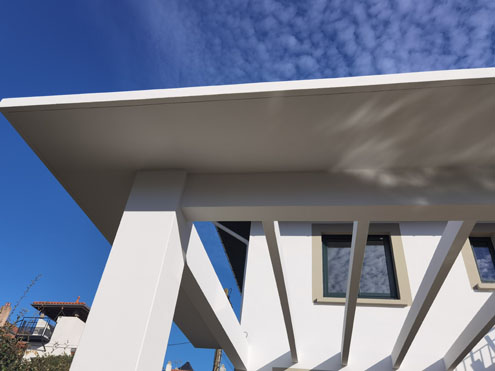
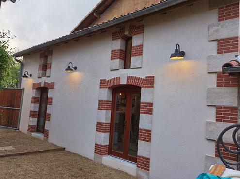
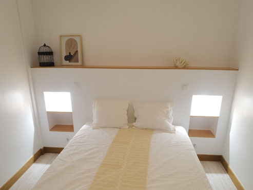
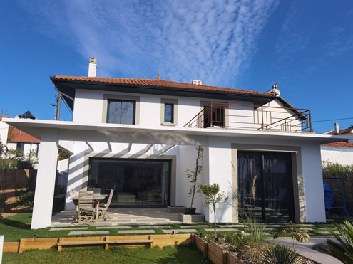

Demolición
Nos encargamos de demoliciones completas, tanto interiores como exteriores, así como gestión de escombro. Esto depende de las necesidades de nuestros clientes, pero generalmente no realizamos demoliciones que requieran el uso maquinaria pesada.



